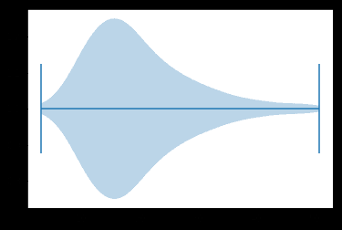
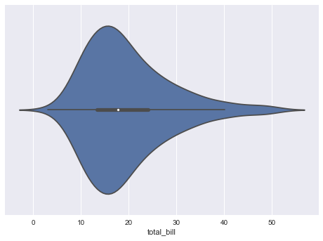
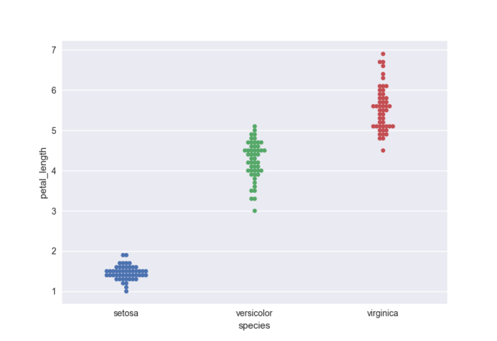
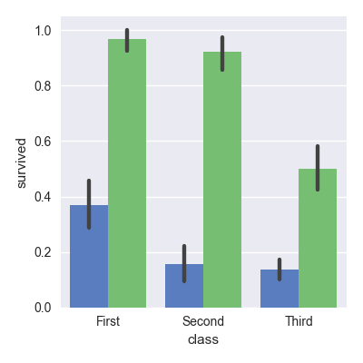

用Seaborn实现可视化
前言
提升你的洞察的最好方法之一是通过可视化你的数据：这样，你可以更容易地识别模式，掌握到困难的概念以及注意到关键的要素，当你使用数据科学中的Python时，你很有可能已经用了Matplotlib,一个供你创建高质量图像的2D库。另一个免费的可视化库是Seabon,他提供了一个绘制统计图形的高级接口。
这篇文章覆盖了大部分常见问题，当用户开始用Seaborn库的时候，下面有多少问题，你能正确地回答。
- 1.用Seaborn VS Matplotlib ？
- 2.如何装载数据来构建Seaborn点
- 3.如何显示Seaborn点
- 4.如何在默认matplotlib的情况下，使用Seaborn
- 5.如何调整Seaborn的上下文环境
- 6.如何调整图像样式
- 7.如何旋转标签文字
- 8.如何设置X/Y坐标
- 9.如何设置刻度
- 10.如何添加标题
原文地址：https://www.datacamp.com/community/tutorials/seaborn-python-tutorial#sm
如果对Matplotlib及Seaborn感兴趣的话，请参加DataCamp的课程Introduction to Data Visualization with Python.
Seaborn vs Matplotlib
正如你所知道的，Seaborn是比Matplotlib更高级的免费库，特别地以数据可视化为目标，但他要比这一切更进一步：他解决了用Matplotlib的2个最大问题，正如Michael Waskom所说的：Matplotlib试着让简单的事情更加简单，困难的事情变得可能，那么Seaborn就是让困难的东西更加简单。
用Matplotlib最大的困难是其默认的各种参数，而Seaborn则完全避免了这一问题。
# Import the necessary libraries |

# Import the necessary libraries |

Matplotlib的默认风格，通常不会增加颜色以及坐标轴的刻度标签以及样式。
而且Seaborn是Matplotlib的延伸和扩展，如果你知道Matplotlib，你就已经掌握了Seaborn的大部分；
如何加载数据构建Seaborn图像
当您使用Seaborn时，您可以使用库本身提供的内置数据集之一，也可以加载Pandas DataFrame。
装载内置海床数据集
要开始使用内置的Seaborn数据集，可以使用load_dataset（）函数。 要查看内置的所有数据集，请点击此处查看 https://github.com/mwaskom/seaborn-data 。 请查看以下示例来查看load_dataset（）函数的工作原理
# Import necessary libraries |

加载您自己的DataFrame数据集
当然，数据可视化的大部分场景您将使用自己的数据，而不是Seaborn库的内置数据集。 Seaborn最适用于包含整个数据集的Pandas DataFrames和数组
DataFrames是一种在矩形网格中存储数据的方法，DataFrame的行不需要包含相同类型的值：它们可以是数字，字符，逻辑等。特别是对于Python，DataFrames集成于Pandas库中，它们被定义为具有潜在不同类型的列的二维标记数据结构。
Seaborn对DataFrames非常好的原因是，因为DataFrames的标签会自动传播到绘图或其他数据结构，正如本教程的第一个示例所示，您在Seaborn中绘制了一个小提琴。在那里，你看到x轴有一个传说total_bill，而Matplotlib图则不是这样。这已经需要很多工作了。
但这并不意味着所有的工作都完成了 - 恰恰相反。在许多情况下，您仍然需要操作您的Pandas DataFrame，以使绘图正确呈现。如果您想了解更多信息，请查看DataCamp的Python中的DataFrames Pandas教程或Pandas Foundations课程
Matplotlib仍然是Seaborn的基础，这意味着结构仍然是一样的，您需要使用plt.show（）使图像显示给您。 您可能已经从本教程上一个示例中看到过。 在任何情况下，这里是另一个例子，其中show（）函数用于显示绘图
# Import necessarily libraries |
如何显示Seaborn点
matplotlib仍然是Seaborn的基础，这意味着绘图方面两者仍然是相同的，你就需要使用plt.show()显示图像。您可能已经在本教程的前一个示例中看到了这一点。在任何情况下，下面是另一个示例, 其中show() 函数用于显示图像：
# Import necessarily libraries |

注意：在上面的代码块中, 您使用内置的 Seaborn 数据集, 并使用它创建一个 factorplot。factorplot 是一个多类型绘图，上面例子中是一个柱状图，因为你设置的参数为’柱状’，同时, 你还可以应设置颜色参数, 并将图例设置为 False
如何使用Seaborn用Matplotlib的默认值
也有很多相反的场景，即那些使用Seaborn并希望用Matplotlib默认设置的问题。
之前，您可以通过从Seaborn包导入apionly模块来解决这个问题。 现在已经弃用了（自2017年7月起）。 导入Seaborn时，不再应用默认样式，因此您需要显式调用set（）或set_style（），set_context（）和set_palette（）中的一个或多个以获取Seaborn或Matplotlib默认的绘图。
# Import Matplotlib |
如何在Matplotlib中使用Seaborn的颜色作为色彩？
如何将Seaborn颜色引入Matplotlib图中的问题。 您可以使用color_palette（）来定义要使用的颜色映射和参数n_colors的颜色数。 在这种情况下，这个例子将假设有5个标签分配给在data1和data2中定义的数据点，所以这就是为什么你传递5到这个参数，你也做一个长度等于N的列表，其中5个整数变化 在可变颜色
# Import the necessary libraries |

如何在Seaborn中旋转标签文本
要在Seaborn图中旋转标签文本，您需要处理图级别。 请注意，在下面的代码块中，您可以使用FacetGrid方法之一，即set_xticklabels来旋转文本
# Import the necessary libraries |
